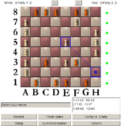
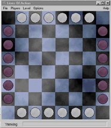
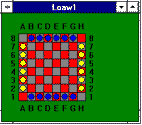
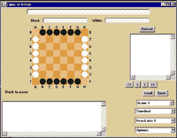
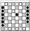
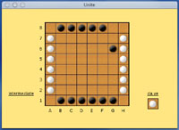

If you're writing a program, or thinking about it, check out the programmer's corner
You can download a version of the applet which will allow you to enter, comment, and view games using your own java-enabled browser. If you use Internet Explorer (not Netscape), you do not need JDK or any other java environment - or you can use any standard java application runner. The applet is also available as a standalone application, runnable under windows-95 and windows-nt.
If you have any comments or suggestions about the use of java on these pages, just drop me a line. Most of all, if you would like to add some commented games to the collection, contact me! I'll set you up with a copy of the Java application.
My longer term plans for the LoaJava include expanding the current front-end into a full playing program.
See Commented
Games or Uncommented
Games to view games!
| (formerly MIA) The product of Mark Winand's Masters thesis,GameMaster is a strong LOA program writen in Java. The current release is packaged as a windows EXE, but in principle at least, it ought to run on any platform that supports Java. |  |
| There is a crude but functional version of LOA amongTommy's Toys. The graphics are really rudumentary, and the play is simplistic, but hey, something is better than nothing, right? | [sorry, no picture available] |
| (updated July 2007) The new version fixes some bugs and tweaks the UI, but retains the speedy play and cool graphics of the previous version. Written by Benjamin Guihaire, Download it hereDownload the previous version 3.4 here |  |
| Loaw 1.0, for windows-95 and windows-nt, by Dave Dyer and Ray Tayek. Dave wrote the low level loa engine, and Ray wrote the windows GUI. This version lacks a help file, but otherwise is (by definition) complete and pretty thoroughly debugged. The machine opponent in this version of the program is still nothing special, but much improved over previous versions. | 
All the static LOA diagrams (other than those produced by the Java Applet) on these home pages were created using LOAW. These are Ray's choice for LOAW's native colors, but fortunately my choice is also available, and the colors are easily customizable. |
Download the installerhere. Loaw requires mfc42.dll, which if you don't already have it, can be downloaded (0.5 mb)
| LoaViewer is a directly executable version of the
LoaViewer java applet, produced by SuperCede, one of the better java
development environments. It doesn't play (yet) but has the same
viewing
and commenting capabilities as the Java applet, without requiring the
host machine to be set up with Java support. It does require a
collection of support DLLs, which are included in the distribution. Download the standalone viewer |
 |
| I don't know how I got this one; I literally found it on a disk I inherited. This version of LOA, by Mike Dickman and Andrew McDaniel,was released in June 1991; and it apparently hasn't been updated since. Given its age, it probably will run under system 6, and I've verified that it still runs under system 7.5 on power macs. The graphics are rudimentary black and white. Play is adequate, but very slow at higher search depths. It is distributed as $10 shareware. Download |  Click on the image to see a full sized board. |
| UNITE 3.0, by Kevin L. Gong, was released in January 2003. Unite is available in OSX and classic versions. This version has improved graphics and better play than the previous version... Unite includes some interesting variations, based on boards with holes. Unite includes a nice long term score keeping feature. Unite is distributed as $10 shareware from the Unite home page. |  Click on the image to see a full sized board. |
There's an amusing story relating these two Macintosh programs from from LOA co-author, Mike Dickman, which fits right in with the theme "LOA just keeps popping up"
Some wise students (or their professors) have chosen LOA as an educational vehicle. Here are links to those we know of.
If anyone knows more about this program, it's one of the things I'm interested in hearing about.
Only a few other people ever played against this program, so its true strength is hard to judge. I still have sources for this program, and a few game records.
[may 1996] the Author of the Plato program has identified himself. He's Mike Huben I'm hoping to acquire some more bits about this pioneering system from him. According to Mike, he's been writing LOA programs ever since. (I guess we all have our favorite problems). Watch this space for more news.
| E-mail: | Go to BoardSpace.net home page |
{kind=link}
{kind=link}